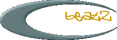
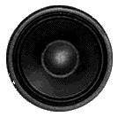
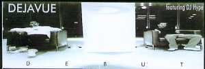

deja::vue deja::vue deja::vue deja::vue deja::vue deja::vue |
die jungs von dejavue haben letztens ne phatte ep rausgebracht.
auf der scheibe werden neben dj hype noch nadine und king kool savas
gefeatured.
| a |
intro metro feat. nadine debut debut (instr.) |
 |
 |
| b |
check die lage styles & skills brutal feat. king kool savas styles & skills brutal (instr.) outro |
|
metro wirkt durch den gesang von nadine recht soullastig, bringt aber dennoch
den dejavue-zug entspannt ins rollen.
in debut geht es dann richtig ab, die jungs zeigen, was bstadt zu bieten hat.
der ohrwurm-artige rhythmus in check die lage wird dann auch nur noch von
den phatten skills von king kool savas getoppt, der auf den seiten von
contra noch mehr
von sich zeigt.
die texte sind korrekt, ohne gangster-attituden wird das haus gerockt und
der gemeine kopfnicker wippt mit.
wenn das plattenlabel zustimmt, werden hier demnächst ein paar
mp3-prelistens zum download rumstehen.
zu haben ist das gute stück bei eurem plattendieler oder
direkt bei noise vinyl (tel.: +30 92091233; fax: +30 92091232).